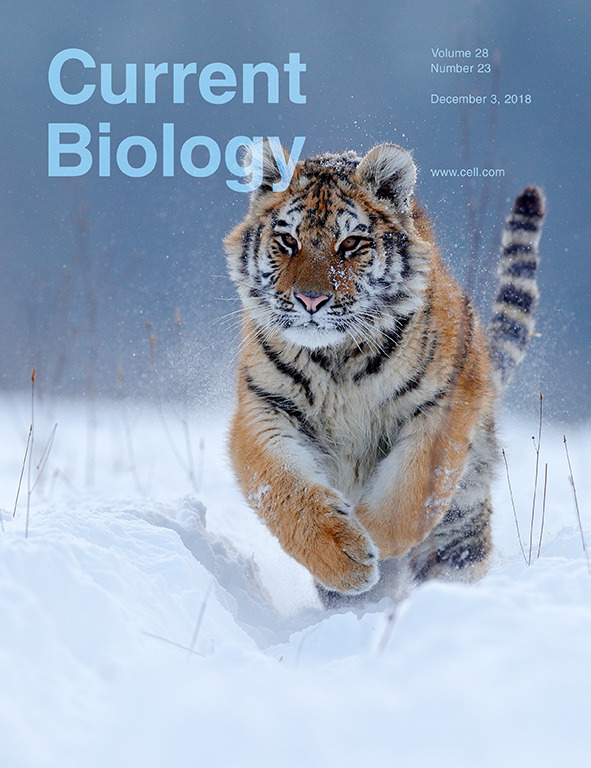

Tiger evolutionary genomics project completed and published in Current Biology as cover story (2018.10)
Citation: Liu YC, Sun X, Driscoll C, Miquelle DG, Xu X, Martelli P, Uphyrkina O, Smith JLD, O’Brien SJ, Luo SJ* (2018). Genome-wide evolutionary analysis of natural history and adaptation in the world’s tigers. Current Biology 28(23):3840-3849.
Selected media highlights:
- New York Times. October 25, 2018. By Rachel Nuwer
- Discover Magazine. October 29, 2018.
- The Scientist. October 25, 2018.
- AFP News Agency. October 25, 2018.
- ScienceDaily. October 25, 2018.
- NewsWeek. October 25, 2018.
- HowStuffWorks. November 6, 2018. By Jesslyn Shields. 